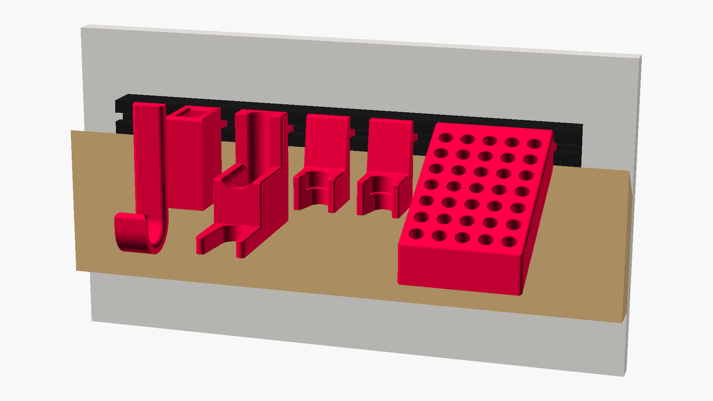
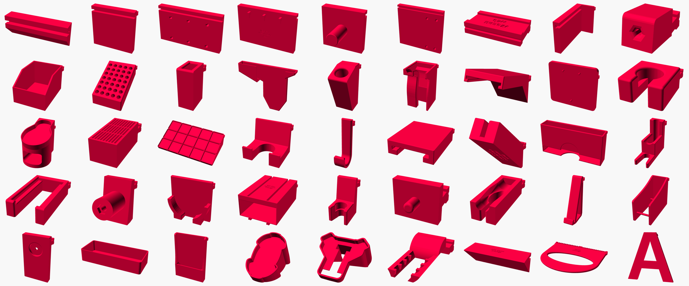

Frenchfinity 2.0 – the customizable French cleat system
One wall. 45 parts. A holder that fits every tool you own.
Stop rebuilding French cleat holders. Frenchfinity is the missing subsystem for your French cleat wall: printed wall anchors hook onto your wooden cleats, every holder slides in from the side and locks with a piece of leftover filament. Frenchfinity 2.0 puts the whole system into one customizer: pick a part, enter the size of your tool, print. Done.

🔥 What's new in 2.0
- 45 parts in one customizer. Every Frenchfinity 1.0 part, plus a bin, a tray, a welding table plate and a French plate with several slots.
- Made for your tool. Enter the size of your screwdriver, file or pliers and the holder fits it exactly. No more holders that almost fit.
- Fits Frenchfinity 1.0. The slot profile matches the original parts exactly, so old and new parts mix, and so do wooden anchors milled with an M5 T-slot cutter.
- Never guess again. Every part has its parameters engraved, and the customizer proposes a matching file name, so reprinting a part takes seconds.
- Open source and tested. All 45 parts are rendered and checked automatically on every change.
🧱 How it works
- Wall: screw wooden French cleats to your wall. No cleats? Use the screw plate, the IKEA Skadis plate or the welding table plate instead.
- Anchor: hang printed wall anchors onto the cleats. Their front carries the T-slot, a few screws fix them for good.
- Holder: generate a holder for your tool, print it and slide its T-tongue into the slot from the side.
- Lock: press a piece of 1.75 mm filament into the small channel between tongue and slot. Zero play.
🛠️ How to use the customizer
- Click Customize on this page.
- Pick your part in the section Part.
- Enter the size of your tool in the section of that part. All sizes are in millimeters.
- Generate, download and print.
Tip: holders that are too tight? Raise print_tolerance a little (default 0.12 mm per side). Want to mix with parts printed with the first OpenSCAD version of this customizer (labeled v1scad)? Choose the slot profile openscad_v1_legacy.
📦 45 parts

Wall anchors, plates and adapters
Wall anchor, French plate, screw plate, IKEA Skadis plate, welding table plate, Nussbaum SL smart lift plate, custom base adapter, angle adapter
Tool holders
Allen key, bits, caliper, crowbar, file, hammer, hook, lifting clamps, locksmith corner, meter stick, pliers, rectangular tools, ring wrenches, round tools, screwdriver, small hanging hole, T-handle, triangle top, wrenches
Storage
Bin, box, spray cans, GluBot, grid, Gridfinity adapter, sandpaper, tablet, tape, toilet paper, tray
Made for one product
Einhell Power X-Change battery and single charger, Wolfcraft Accumobil drilling aid, Wolfcraft ES 22 corner clamp
Workshop helpers
Router guide, tongue cleaner, letters for your wall
🖨️ Print recommendations
We printed all our test parts on a Bambu Lab X1 Carbon with the preset 0.28 mm Extra Draft.
- Supports: most parts need a little support for the groove. Depending on the part, printing it rotated by 90° avoids supports completely.
- Regular, not tree: use regular supports instead of tree supports, the thin trees tend to fail on high holders. One or two raft layers help, too.
- Build plate only: enable support on the build plate only, otherwise the engraved labels and the screw holes get useless support.
- Support material: with PLA, the supports came off more easily with “Support for PLA” than with “Support for PLA/PETG”.
- Infill: 10 % is enough for most parts. For more strength, cut the model in two in Bambu Studio (enable “cut to parts”) and raise the infill of the part with the tongue to 90 %.
🧰 What you need
- Printed parts only: no tools at all.
- Wooden wall anchors: an M5 T-slot cutter. The guide sets up router and table saw, the tongue cleaner cleans the milled slots.
- Fixing printed anchors: 2.0 x 20 mm screws.
- Sanding the tongue: sanding sponges.
- Labels: we use the Brother PT-P300BT label printer and tesa strips, because printed labels do not stick too well.
The links above are affiliate links.
♻️ Goodbye, filament leftovers
Frenchfinity loves leftovers. Print a small holder for one of your tools, and if the spool is too empty even for that, use the last meters to lock your holders: press a short piece into the 1.7 mm channel between tongue and slot.
💬 Open source
Frenchfinity 2.0 is open source on GitHub: github.com/Bastelsaal/frenchfinity-openscad. Missing a holder or found a bug? Open an issue, pull requests are welcome. Thanks to JGoodwillieV for the bin, the tray and the French plate with several slots.
New to Frenchfinity? Watch our video and visit frenchfinity.xyz.
📄 License
Frenchfinity is licensed under the Creative Commons Attribution-NonCommercial-ShareAlike 4.0 International License (CC BY-NC-SA 4.0). You may use it in your workshop even if your workshop produces commercial products.
You are free to:
- Share – copy and redistribute the material in any medium or format
- Adapt – remix, transform, and build upon the material
Under the following terms:
- Attribution – You must give appropriate credit, provide a link to the license, and indicate if changes were made. You may do so in any reasonable manner, but not in any way that suggests the licensor endorses you or your use.
- NonCommercial – You may not use the material for commercial purposes.
- ShareAlike – If you remix, transform, or build upon the material, you must distribute your contributions under the same license as the original.